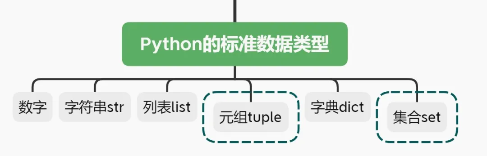

元组与集合-Python基础连载（十一）
开篇

在本期内容中，将介绍Python六大标准数据类型中最后两种：元组(tuple)与集合(set)。
元组(tuple)
你已经学习过列表，并且知道列表是可变数据类型。这里要学习的元组和列表非常相似，在掌握列表的使用方法基础之上，再来学习元组会非常容易。
你只需记得元组与列表的不同之处：
1.元组是不可变数据类型
2.元组使用()包裹元素
元组的不可变特性决定了元组没有增删改等功能，只可查询。
其查询方法归纳如下：
- 1.
index()
()内传入所要查询的元素值，返回该元素值所在的下标，若找不到该元素值，则报错：
1 | x=(1,2,3,4,5) |
- 2.
count()
统计某个元素值在元组中出现的个数，若该元素值并不存在于元组中，则返回0，表示共找到0个：
1 | y=[1,2,1,2,3,4,5] |
元组中有一些注意事项需要了解：
【注意1】定义一个空元组可以使用x=()或者x=tuple()，但是在定义只含有一个元素的元组时，需要在元素后面添加一个逗号,，以便和数字区分。看栗子：
1 | z=(1) |
看，加了,的变量zz才是元组类型。
【注意2】虽然元组不可变，其内部元素在定义元组时就固化了，我们不能对其做元素做删除操作。但是，我们可以直接删除整个元组，这并不属于对元组内的元素的删除操作，因此是可行的。
使用del()可以删除整个元组：
1 | x |
和字符串的删除和覆盖操作类似，这里的元组也是被抹去了存在，但初心不改(意思是元组内的元素在整个生命周期从未变动过)。
集合set
集合用{}来包裹其所含元素，看起来和字典有些许相似，但实际上它们是两个截然不同的东西。
字典中的元素是键值对，而集合中的元素都是单个元素。
举个集合的栗子：
1 | z={1,2,'a'} |
在高中数学中，你已经学习过集合，那里的集合具有无序性、不可重复性，这些特点同样适用于Python中的集合(set)。
正是集合的无序性，导致其不能按照下标来进行查询操作。
但集合是可变数据类型，因此可以对其做一系列的修改操作：
- 1.
add()
添加元素到一个随机位置
1 | z{1, 2, 'a'} |
- 2.
pop()
随机删除一个元素，并返回被删除的元素值
1 | z |
- 3.
remove
删除具有特定值的元素，不存在则报错
1 | z |
- 4.
discard()
和remove的功能用法一样，只是待删除元素不存在于集合中时并不会报错，而是什么都不做
1 | z |
- 5.
update
A.update(B)表示将集合B拼接到集合A中
1 | A={1,2,3} |
操作之后，A是拼接后的集合，而B不变。
（ps:这里的顺序乱了，这是集合的无序性造成的）
- 6.
union()
上面的update()方法用于将一个集合拼接到另一个集合中，而这里的union()可以将多个集合拼接在一起，形成一个新的集合。
1 | A={1,2,3} |
此时，A、B、C三个集合都没有改变，这一点和update()不同:
1 | A{1, 2, 3} |
（ps：顺序乱了，还是因为集合的无序性，并不是集合发生了改变）
所以，当使用union()方法拼接多个集合时，需要使用一个新的变量来存储拼接后的结果，就像这样：
1 | new=A.union(B,C) |
以上便是集合常用的一些操作。
类似于数学中的集合，这里的集合(set)也可以做运算，比如交，并等，这些内容用的不多，了解即可。现在以一个综合的栗子来看一下：
1 | A={1,2,3} |
至此，Python中的六大基本数据类型已经全部介绍完了。还有一些诸如排序，深浅复制的遗留问题将单独安排一期进行讲解。